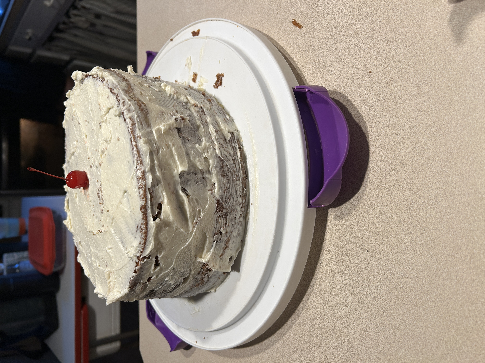
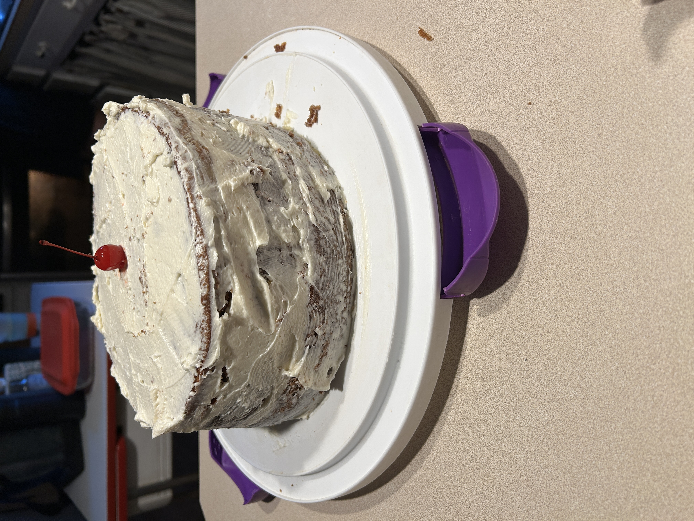

Grandma's German Chocolate Cake
A Digital Heritage Project
Passed down from my great-grandmother and preserved from Grandma’s 2005 recipe card, this project celebrates the love, time, and flavor behind every slice.
Through this site, I’ve turned her handwritten recipe and family traditions into a digital story — combining coding, history, and love. You’ll see the XML model, step-by-step videos, and the sweet results.
 
